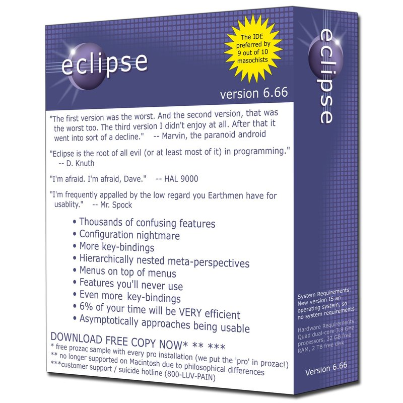

Parody of Eclipse packaging, the most popular free developer tool, from the funny folks at FarOutShirts.com. I took a few pages of notes of my frustrating experiences but decided that the picture above did a better job.
Over the years Microsoft has invested a lot in the development of tools, and this generated much of its revenues in the early years. In fact, Microsoft was a tools company before it was an operating systems company.
Next to Windows, the most important product Microsoft produces today is Visual Studio. The tool has flaws, but it wins awards, especially for its ease of use. It is possible to create your first Windows application or web site just minutes after installing it.
The closest thing to Visual Studio in the free software world is Eclipse, which is despised by many for its excess complexity. Craig Mundie, Microsoft's Chief Research and Strategy Officer, asserted in a recent interview that the Linux server market share had plateaued. If this is the case, the state of Linux's tools has to be a big reason for this.
Eclipse is more powerful than Visual Studio, and can be used to develop all kinds of applications, but it has never had the same approachability. Eclipse has gotten better over the years, but it still has a long way to go. The community needs to focus on building powerful yet easy to use tools.